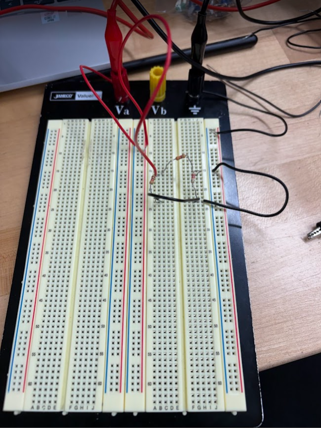
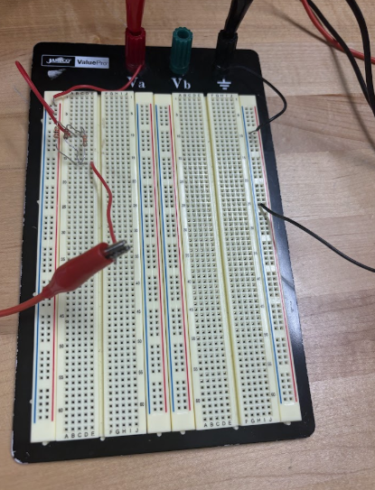

LAB STUDY / 01
Resistor Network on a Breadboard
A breadboard prototype with a resistor network, jumper wires, and connections to the power terminals.
View original photoSELECTED WORK / 01—03
A closer look at three of my breadboard circuit setups, exploring electrical components and connections through hands-on lab work.

A breadboard prototype with a resistor network, jumper wires, and connections to the power terminals.
View original photo
A compact resistor circuit assembled on a breadboard with test leads positioned for lab measurements.
View original photo
A hands-on circuit setup combining resistors, a wired component, and clip leads on a solderless breadboard.
View original photoTHE LEARNING BEHIND THE WORK
In NJIT’s Circuit Analysis AC and DC Lab, I built and tested resistor circuits using breadboards, power supplies, and a digital multimeter. This work involved applying Ohm’s law and analyzing voltage and power to understand circuit behavior.
Explore my technical skills ↗